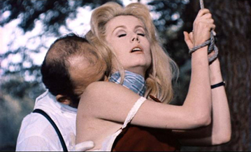
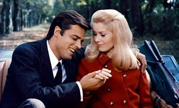
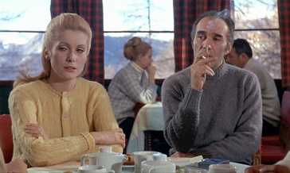
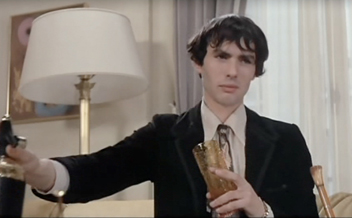
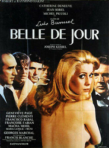
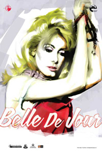
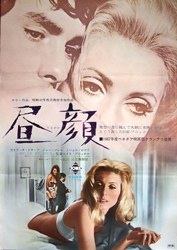
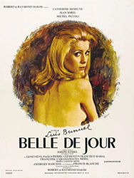
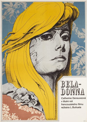

Catherine Deneuve - Séverine Serizy
Jean Sorel - Pierre Serizy


Michel Piccoli - Henri Husson
Pierre Clémenti - Marcel

Renée
Mathilde
Pallas
Séverine Serizy, a young and beautiful housewife, is unable to share physical intimacy with her husband, Dr. Pierre Serizy, despite their love for each other. Her sexual life is restricted to elaborate fantasies involving domination, sadomasochism, and bondage. Although frustrated by his wife's frigidity toward him, he respects her wishes. While visiting a ski resort, they meet two friends, Henri Husson and Renée. Séverine does not like Husson's manner and the way he looks at her. Back in Paris, Séverine meets up with Renée and learns that a common friend, Henriette, now works at a brothel. At her home, Séverine receives roses from Husson and is unsettled by the gesture. At the tennis courts, she meets Husson and they discuss Henriette and houses of pleasure. Husson mentions the address of a high-class brothel. He also confesses his desire for her, but Séverine rejects his advances. Haunted by childhood memories, Séverine goes to the high-class brothel, which is run by Madame Anaïs. Reluctant at first, she responds to the 'firm hand' of Madame Anaïs, who names her "Belle de Jour," and has sex with a client. After staying away for a week, Séverine returns to the brothel and begins working from two to five o'clock each day, returning to her unsuspecting husband in the evenings.
One day, Husson comes to visit her at home, but Séverine refuses to see him. Still, she fantasises about having sex with him in her husband's presence. At the same time, Séverine's physical relationship with her husband is improving and she begins having sex with him. Séverine becomes involved with a young criminal, Marcel, who offers her the kind of thrills and excitement of her fantasies. When Marcel becomes increasingly jealous and demanding, Séverine decides to leave the brothel, with Madame Anaïs's agreement. Séverine is also concerned about Husson, who has discovered her secret life at the brothel. After one of Marcel's associates follows Séverine to her home, Marcel visits her and threatens to reveal her secret to her husband. Séverine pleads with him to leave, which he does, referring to her husband as "the obstacle". Marcel waits downstairs for Pierre to return home and shoots him three times. Marcel then flees but is shot dead by police. Séverine's husband survives but is left in a coma. The police are unable to find a motive for the attempted murder. Sometime later Séverine is at home taking care of Pierre, who is now paralysed, blind and in a wheelchair. Husson visits Pierre to tell him the truth about his wife's secret life; she does not try to stop him. After Husson leaves, Séverine returns to see Pierre crying. In an ambiguous ending, Pierre then gets out of the wheelchair, pours himself a drink and discusses holiday plans with Séverine.




